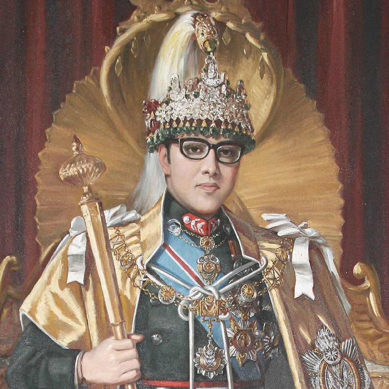

Birendra Bir Bikram Shah Dev
Biography:
Birendra Bir Bikram Shah Dev was born on 28 December, 1945 in Narayanhiti Royal Palace, Nepal.
He was the son of Mahendra Bir Bikram Shah Dev and Indra Rajya Lakshmi Devi.
He was the tenth King of Kingdom of Nepal from 31 January, 1972 to 1 June, 2001.
He died during the Royal massacred at the age of 55 on 1 June, 2001 in Narayanhiti Royal Palace, Nepal.